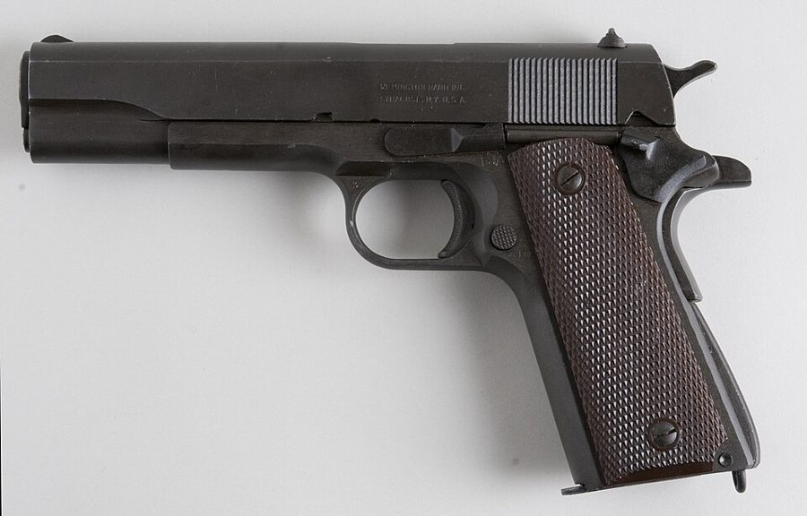
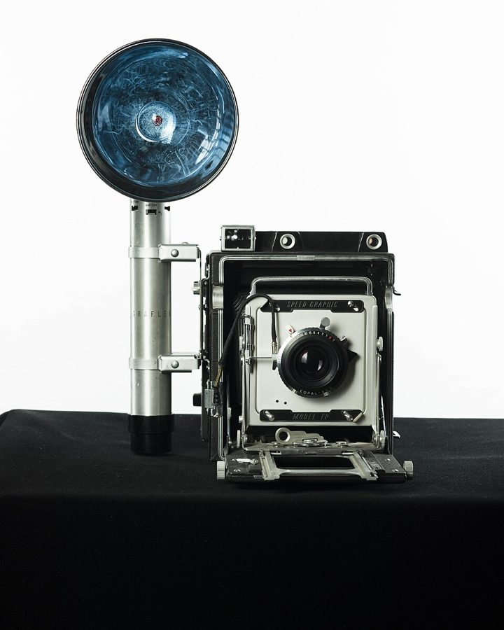
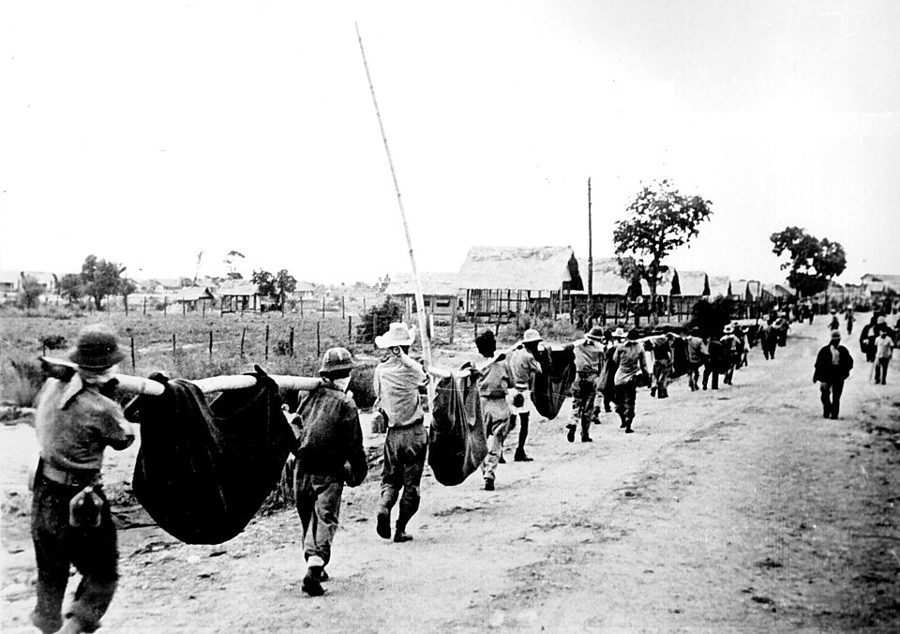
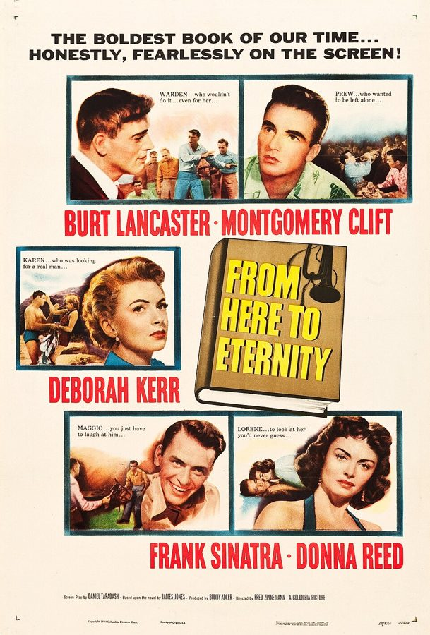

这一章在做什么
接上一页：他离开照相馆，熬过警卫连，调进了基地补给站的照相器材库。这一页是服役的最后一年，1952 年秋到 1953 年 10 月，他二十二三岁，朝鲜的仗还没停。
七个小节，一节一件事，多半是他怎样钻规矩的空子而没被抓住。读的时候看每一次他押上的是什么，靠的是算计还是运气。
1952.9
1953.1
1953.5
1953.10
补给站的照相器材库
靶场
「你只剩 11 个月」
不足 12 个月的不派
门槛改成 6 个月
他只剩 5 个月
只剩 1 个月
原定 10.29
7.27 朝鲜停战
书里没有提
10.5 退伍
劳动节后调来
（上一页末尾）
本站示意图。书里这一段没写年月，日期是从入伍那天（1951 年 10 月 30 日）和他自己说的「还剩几个月」倒推的。他哪个月从补给站调去靶场，书里没说，所以中间画成虚线。
出场的人
这一页的麻烦是：好几个「人名」其实是军衔或者当天的值班岗位。听书时先分清哪个是名字，哪个是头衔。
“Sergeant Major” 外号，男，实际军衔是最低的 private 营房里一起打牌的老兵。从前真当过 sergeant major，被降到底，自己不在乎。
Sergeant Strong master sergeant 器材库前面办公室里的人，说话轻，一紧张就发慌。巴丹死亡行军的幸存者。
Sergeant Wilson master sergeant 第二陆战师照相馆派来领器材的。疑心重，嗓门大，总觉得有人坑他。
Greuner Albert Greuner，Pfc. 上一页末尾来的摄影学校毕业生，和作者一起守器材库。这里只出来数了一回灯泡。
the First Sergeant 没有名字 补给站这个单位里管日常的最高军士，第 22 节从头到尾的对头。
Master Sergeant Anderson 只在对话里出现 排值班的人。他临时换了一次班，救了作者。
Corporal McIntyre /ˈmækɪntaɪər/ 原本排在那个星期六值班的下士，没当过这个班。
a staff sergeant 没有名字，第 24 节 手枪靶场的上士，个子比作者大，是有家要养的职业军人。
不是名字，是轮值。 Officer of the Day （当日值班军官）和 Duty N.C.O. （值班军士）每天换人。第 18 节的 Duty N.C.O. 是别人；第 22 节里当 Duty N.C.O. 的是作者自己。
两个 First Sergeant。 上一页扣着调令不给的那位在警卫连；这一页的是补给站的。两位都没有名字，都和他不对付。另外，口头上不管哪一级 sergeant 都只叫 Sergeant，所以 Sergeant Strong 其实是 master sergeant。
背景：作者默认你知道的事
两道杠，和谁管得了谁
officers 军官
值班军官、靶场的主官
the First Sergeant 职务
单位里管事的军士；第 22 节的对头
master sergeant 军士长
Strong、Wilson、Anderson
staff sergeant 上士
第 24 节吼他的那位
sergeant 中士
带队打靶的那位
corporal 下士，两道杠
作者、McIntyre
Pfc. 一等兵，一道杠
Greuner
private 列兵，没有杠
外号「Sergeant Major」的牌友
busted
降级
本站示意图。只画了这一页出现的几级，中间还有别的军衔。1953 年陆战队士兵的最高军衔就是 master sergeant；first sergeant 和 sergeant major 这两个军衔 1946 年取消、1954 年才恢复，这几年只是职务的叫法，所以那位牌友「从前当过 sergeant major」说的是老军衔。corporal 以上到军士长统称 N.C.O.（军士）。
臂章上的杠叫 stripe。升一级添一道，犯了事可以被降级（busted），最重的是上军事法庭（court-martial）。军衔低的人顶撞军衔高的人，押上的就是自己的杠。
这一页好几件事都要用这把尺子量：谁有东西可丢，谁没有。
朝鲜的仗打到哪了
朝鲜战争 1950 年 6 月爆发，1951 年年中以后战线大体停在三八线附近，一边谈一边打，到 1953 年 7 月 27 日才签停战协定。所以这一页的大部分时间里，「把你送去朝鲜」是一句实打实的威胁。
他是被征来的兵（draftee），服役期两年，到期就走；职业军人（career Marine）是自己签约留下来的。两种人算账的方法不一样。
每年打一次靶

M1911A1，书里说的「the .45」：点四五口径的军用半自动手枪，美军从 1911 年起装备。第 23 节他当教练教的就是它。
Askild Antonsen，CC BY 2.0，维基共享资源 陆战队有句老话：每个陆战队员首先是步枪手。所以管仓库的、照相的每年也要去靶场打一次步枪，成绩记进档案。及格以上分三档：marksman、sharpshooter、expert，各有一枚徽章。
靶场上射手从 200 码线一段段往后退，越打越远。手枪只有军官和少数工种要考。
Speed Graphic 和一次性的闪光灯泡

Speed Graphic 相机和闪光灯架，现代拍摄的藏品照。圆碗是反光罩，灯泡插在正中。Federal Bureau of Investigation (FBI)，公有领域，维基共享资源 Speed Graphic 是 Graflex 公司的大画幅相机，1930 到 1950 年代美国报社和军队摄影师的标准装备。胶片从机背装：可以插单张的片夹，也可以换上 film pack adapter，装一包十几张的「片包」。
闪光灯泡（flash bulb）是一次性的，闪一下就烧掉，拍一张用一个。所以一家照相馆一次能订几千个。
订单 4,500 个 = 7 箱 × 600 + 散装 300
600
600
600
600
600
600
600
散装 300
装上卡车的 6 箱
没开箱，他不会去数
第 7 箱
留在地上
他数过
一个不少
本站示意图。第 21 节的那笔账，听书时数字一闪就过去了，对着图看一遍。
巴丹死亡行军

1942 年，菲律宾，巴丹行军之后。美军战俘用竹竿和毯子抬着倒下的同伴。这张照片是后来从日军手里缴获的。
U.S. Marine Corps，公有领域，维基共享资源 1942 年 4 月，菲律宾巴丹半岛（Bataan）上的美军和菲律宾军队向日军投降，七万多名战俘被押着步行约一百公里去战俘营，沿途缺水缺粮，掉队的被打死，死者数以千计。活下来的人又在战俘营里关了三年多。
作者只用半句话交代 Strong 的这段来历，然后说自己特意不给他添麻烦。
他在读的那本小说

1953 年同名电影的海报，中间画的就是那本小说。作者读的是书，不是看的电影。“Copyright 1953 Columbia Pictures Corp.”，公有领域，维基共享资源 From Here to Eternity （中译《从这里到永恒》，电影译《乱世忠魂》）是 James Jones 1951 年出版的长篇小说，写珍珠港事变前夏威夷一个陆军连队。主人公 Prewitt 是个倔脾气的列兵，不肯替连里打拳击，被上面一步步整治。
一个逃操的下士躲起来读的是这样一本书，作者没有加评语。
留个记号：后面还会回来
这一页作者没有直接说「后来常想起」，下面几条是前面埋下、这里接上的线，和通到下一章的线。
像经济学家那样想 第 19、20 节；承接上一页第 11 节 上一页他说自己那时已经在用经济学家的方式想事情。这一页有两处同样的算法：靶场上的 incentives，和擦枪之前先算概率。把它们连起来是本站的看法。
敌人、朋友、运气 第 22 节；承接上一页第 13 节 上一页他总结自己：结的仇够惹上麻烦，交的朋友够脱身，关键时候还有运气。第 22 节里 luck 这个词又出来了。Preface 里女儿那句 “Luck!” 也是这条线。
谁输得起 第 18 节和第 24 节 第 18 节和最后一节是一对：先是别人替他算了这笔账，后来轮到他自己算。本站的看法，见下面「值得停下来的句子」。
床上堆满的书 第 24 节 退伍前他读的东西越来越多，说是为回去做准备。准备去做什么，下一章开头就接上。
词与短语
词条按书里出现的顺序排，小标题是原书用 • • • 隔开的各节。斜体小字是那句话里的几个词，在 Kindle 里搜它就能跳到那一句。单个的生词长按就能查，这里收的主要是词典帮不上忙的。
第 17 节 · 仓库角落里的清闲差事
my kind of place
… Depot was my kind of place—lax …
正合我意的地方
my kind of + 名词：对我胃口的那一类。lax = 松懈，这里是褒义地说。
did not even pretend to
… He did not even pretend to …
连装都不装（懂）
不是批评，是说这位中士坦率。
sight unseen
… had him transferred, sight unseen. By …
见都没见过，就……
固定搭配，原指没看货就买。上尉没见人就把他调走了。
clean out
… captain had cleaned out all the …
清理干净，一个不留
把彭萨科拉毕业的摄影兵全调走了，接上一页第 16 节。
could hardly be expected to
… and could hardly be expected to …
当然不会……
往轻里说：字面是「很难指望他会欢迎」，意思是绝不欢迎。
fenced-off
… in a fenced-off back corner of …
用铁丝网隔开的
stickball
… so that we could play stickball. …
棍球
纽约街头孩子玩的简化棒球，拿扫帚把当球棒。在军需仓库里玩它，可见有多闲。
efficiency ratings
… front office and, when efficiency ratings …
工作考评
军队和公务员系统里定期给每个人打的分。
working ourselves to death
… unit were not working ourselves to …
累死累活
前面加 not，又是反着说：我们明明闲得很。least of all me = 尤其是我。
the bottom line
… saw was only the bottom line—the …
最终结果
本义是账本最末一行的盈亏数。只看结果、不看你忙不忙，是作者后来常讲的道理。
第 18 节 · 牌桌上的「Sergeant Major」
bid whist
… regular games of bid whist, a …
叫牌惠斯特，四个人两两搭档的纸牌
桥牌的近亲，在美国黑人中间一直流行。whist 读 /wɪst/。
colorful
… the most colorful of whom was …
最有故事、最有个性的
说人 colorful 和颜色、肤色都无关。
buck private
… fact he was a buck private. …
最底层的列兵
buck 是强调：光杆一个，什么杠都没有。
march to his own drummer
… who marched to his own drummer, so …
我行我素
字面：跟着自己的鼓点走。出自梭罗《瓦尔登湖》。用在一个该齐步走的军人身上，是双关。
the brig
… been put in the brig, as …
禁闭室
海军、陆战队的说法，本义是军舰上的牢房。
busted to private
… having been busted to private. …
被一撸到底，降成列兵
bust 在军队口语里是降级。第 24 节还有 gotten busted 。
fall from grace
… bitter about having fallen from grace, …
失势，从高处跌下来
本是宗教说法：失去上帝的恩宠。
tour of duty
… finish this tour of duty in …
这一期服役
tour 不是旅行，是一段固定期限的任职。
82nd Airborne Division
… join the 82nd Airborne Division. …
第 82 空降师
陆军的伞兵师，不属于陆战队。他等的是在陆战队期满，然后改投陆军。Airborne 读 /ˈerbɔːrn/。
be in store
… promotion might be in store. …
快要来了
和商店无关。in store = 已经备好、等着发生。
that’s all right
… “Oh, that’s all right, sir,” Sergeant …
不用了，长官
不是「那挺好」。这是客气地谢绝：升职就免了吧。整段的笑点在这一句。
clown around
… he liked to clown around, he …
耍宝，嘻嘻哈哈
后半句 not just a clown 是预告：下面要讲他不只是个活宝。
Officer of the Day
… the Officer of the Day came through …
当日值班军官
轮流担任，夜里查营房。第 20 节查枪的也是这个岗位。
Duty N.C.O.
… The Duty N.C.O. was with him, …
值班军士
N.C.O. = non-commissioned officer，一个字母一个字母念。指下士、中士这些士兵里提上来的头目，不是军官。
drown me out
… loud enough to drown me out: …
把我的声音盖过去
他是故意喊得比作者响，让那句骂人的话算在自己头上。
two stripes to lose
… “Sowell’s got two stripes to lose,” …
有两道杠可丢
stripe 是臂章上的杠，两道是 corporal。
第 19 节 · 打靶的两个星期
dry run
… engaging in various “dry run” exercises …
不装子弹的空练
dry = 不来真的。平时也用来说「预演、彩排」。
snapping in
… were called “snapping in” exercises and …
据枪练习
陆战队行话：一遍遍摆射击姿势、瞄准、空扣扳机，把身体拉开。
assume a position
… properly assuming the various prescribed positions …
摆出（规定的）姿势
assume 这里是「采取」，不是「假定」。
liberty card
… I was handed my liberty card in …
外出证
liberty 在海军、陆战队是「短时间离营外出」。凭这张卡出营门，卡在谁手里，谁就管着你的进出。这一节的关键词。
enlisted men
… all of the enlisted men from …
士兵和军士（军官以外的所有人）
和 officers 相对。不是「刚入伍的人」。
turn in
… to turn in our liberty cards. …
上交
不是「拐进去」，也不是口语里的「上床睡觉」。
roll call
… absent when roll call was taken. …
点名
roll 是名册。动词用 take。第 22 节又出现两次。
court-martial offense
… card was a court-martial offense. …
够上军事法庭的罪过
court-martial 这一页出现三次，每次都是他掂量过的那个代价。
one cannot be faint-hearted
… hand, one cannot be faint-hearted. …
人总不能太胆小
往轻里说。用一句格言似的话，带过了「我决定冒上军事法庭的险」。
improving my mind
… the library, improving my mind. …
陶冶心智
一本正经的老派说法，安在一个逃操的人身上，是自嘲。不过他确实是在读书。
chow
… would go to chow in the …
开饭，伙食
军队口语。mess hall 是食堂，mess 不是「乱」。
dress uniform
… changed into a dress uniform and …
外出穿的整齐军服
dress 是「正式场合穿的」，和裙子无关。
rifle coach
… each rifle coach’s lowest shooter had …
射击教练
靶场上一个教练带几个射手。第 23 节他自己当了 coach。
in the event of a tie
… In the event of a tie, …
要是打成平手
tie = 平局。in the event of = 万一。
outshoot
… had to outshoot him at each …
打得比他准
out- 加动词 = 在这件事上胜过。平分时军衔低的人扛箱子，他的搭档是军士长，所以平了也不行。
work wonders
… other cases, incentives worked wonders. …
效果奇佳
incentive（激励、诱因）是经济学家的词。As in other cases 四个字说明他在总结一条规律。
sharpshooter
… to win a sharpshooter’s medal, missing …
「优秀射手」，三档里的第二档
往上是 expert，往下是 marksman。他差一分到 expert。
a fitting climax
… It was a fitting climax to …
一个相称的收场
要反着品：这「成功的两周」是逃了两周操的两周。
第 20 节 · 擦枪值不值
half-military and half-civilian existence
… our half-military and half-civilian existence was …
半军半民的日子
existence 这里是「过日子的方式」。指补给站这种朝九晚五的后勤单位。
marked down
… could get you marked down and …
被记上一笔
不是商店里的「降价」。
a real pain
… It was a real pain. …
烦死人的事
口语，= a pain in the neck。不是真的疼。
a given rifle
… that a given rifle would be …
任意一支枪
given 作形容词：某一个、任取的。这是概率题的口气，同一句里连用两次。
take in a movie
… go out to take in a movie. …
去看场电影
take in = 去看（演出、电影）。第 22 节还有一次。
going to get it
… “Oh, you’re really going to get it …
早晚要挨收拾
get it = 挨罚、倒霉。it 没有具体所指。
a hollow ring
… more and more hollow ring as …
（这话）听着越来越空
ring 是话听起来的味道：ring true （听着像真的）、ring hollow （听着发虚）。
a run of luck
… a very long run of luck, …
一连串的好运
run = 连续的一段。
第 21 节 · 数灯泡的军士长
front office
… of the front office people we …
管事的办公室，上头
不是「前面那间屋」。指一个单位里管行政和对外的那一层。上一页末尾也用过。
Bataan “death march”
… the infamous Bataan “death march” in …
巴丹死亡行军
见上面背景。infamous 读 /ˈɪnfəməs/，臭名昭著，不是「不出名」。
make it a point to
… I made it a point not to …
特意留心（不）做某事
officious
… was an officious and perennially suspicious …
爱摆谱、爱多管事
不是 official（官方的）。读 /əˈfɪʃəs/。
cheat him out of
… to cheat him out of something …
把他的东西骗走
动词 + 人 + out of + 东西：使他失去。下面的 short-changed him out of 是同一个句型。
take any crap
… wasn’t going to take any crap, …
不吃这一套，不受这个气
take = 忍受。后面 Trouble 的 T 大写，是在学他的腔调。
often wrong but never in doubt
… often wrong but never in doubt. …
常常错，却从不犹豫
一句现成的俏皮话，不是作者自创的。
film pack adapter
… for a film pack adapter missing …
装片包用的后背
见上面背景。它平时就装在机背上，这是下面那通电话的包袱。
camera outfit
… a Speed Graphic camera outfit that …
一整套相机器材
outfit 不是衣服，是成套的装备。
pick on
… whom Wilson would pick on. …
专找……的茬
不是「挑选」。
Don’t give me that
… “Don’t give me that!” he said. …
少跟我来这套
I’ve been around
… “I’ve been around—and let me …
我可是见过世面的
around 后面什么都不接，意思是「混得久、什么都见过」。
be due
… Sergeant Wilson was due over to …
按日子该来了
due = 预定在某时到。和「到期欠款」是一个词。
600 to a crate
… came packed 600 to a crate …
每箱 600 个
数量 + to a + 容器 = 每……装多少。crate 是木条箱。
play it straight
… you guys play it straight with …
老老实实，不耍花样
他说这话的时候，刚被耍完。
count out
… Although I counted out the seven …
当面一箱一箱点给他
点了七箱，装车的是六箱。
short-change
… The crate we short-changed him out …
少给他的
本义是找零钱时少找。
第 22 节 · 师长检阅那天
peccadillos
… My various peccadillos in the Marine …
小过失
读 /ˌpekəˈdɪloʊz/。把够上军事法庭的事叫「小毛病」，还是往轻里说。
skating on thin ice
… often involved skating on thin ice. …
在薄冰上滑，玩悬的
Commanding General’s inspection
… scheduled to have Commanding General’s inspection. …
基地司令（将军）亲自检阅
全基地最大的阵仗。这个词在这一节里一遍遍原样重复，First Sergeant 每说一次都是全称。
not one to
… I was not one to go …
不是那种会……的人
go along with = 顺着、照单全收。别人「默认」没人敢缺席，他偏不认这个默认。
have to say for yourself
… do you have to say for yourself?” …
你还有什么可辩解的
长辈、上级训人的套话。作者下一句把它原样掉了个头还回去。
hard evidence
… if he had any hard evidence, …
真凭实据
hard = 确凿的。
go for his bait
… I was not going for his bait, …
咬他的钩
bait 是鱼饵。go for = 扑上去要。
see to it that
… personally going to see to it …
一定把这件事办成
不是「看见」。几个月后他又用了一次：I have seen to it that 。
fall out
… interfere with your falling out tomorrow …
出营房列队
军语。平时的意思是「闹翻」，这里完全不是。
who am I to
… “who am I to predict the …
我算老几，哪敢……
前面的 with great humility 要反着读：这是顶嘴，不是谦卑。
the S.O.B. had me
… I thought the S.O.B. had me, …
这混蛋把我拿住了
S.O.B. = son of a bitch，逐个字母念。have 某人 = 抓住了把柄、赢定了。
give him the satisfaction
… give him the satisfaction of saying …
让他称心
wasn’t about to = 绝不打算。
luck came through
… However, luck came through when all …
运气帮上了忙
come through = 关键时刻不掉链子。注意主语是 luck，不是他。
volunteer an explanation
… But rather than volunteer an explanation, …
主动解释
volunteer 作及物动词：没人问就自己说出来。后半句 let him work for it ：让他一句一句来问。
第 23 节 · 手枪靶场
better duty
… pistol range was better duty than …
更舒服的差事
duty 这里是「岗位、差事」，不是「责任」。
for the official record
… a .45 for the official record. …
记入档案的正式考核
.45 读 forty-five，指点四五口径手枪。
reservists
… who were in fact civilians—reservists—things got …
预备役人员
平时是老百姓，定期回来训练。上一页拍照的那批也是。
dicey
… things got really dicey, as you …
悬，说不准会出事
口语，来自 dice（骰子）。
a somewhat delicate operation
… hands—a somewhat delicate operation—because he …
一件有点微妙的活儿
从别人手里拿走一把上了膛的手枪，他只说「有点微妙」。
women Marine reservists
… “our shooters today are———women———Marine———reservists.” …
女陆战队预备役
长破折号是在写主官一个词一个词往外挤。这一节的笑料建立在 1950 年代对女性的成见上，照当年的口气读。
conjure up
… You could just conjure up a …
眼前浮现出
conjure 本义是变戏法。读 /ˈkʌndʒər/。
there was no way
… there was no way I was …
说什么也不会
不是「没有路」。
Don’t crowd
… “Don’t crowd, Sowell,” I heard a …
别挤
crowd 作动词。桌子底下早就有人了。
第 24 节 · 提前二十四天
fool with
… be late, fooling with all this …
瞎摆弄
junk 是破烂。上士眼里，那一床的书报是破烂。
rank enough … man enough
… you’re not man enough to shut …
论军衔你不够格，论拳头你没那个种
名词 + enough = 够……的分量。两句对着说：一句讲军衔，一句讲拳头。
very deliberately
… I very deliberately took off my …
不慌不忙地
这里不是「故意」，是慢条斯理。摘眼镜的意思是：要打就来。
You just keep on talking
… “You just keep on talking, Sowell.” …
你就接着说吧
一句威胁：再说下去有你好看的。作者偏偏按字面接：「我正打算说下去。」
asymmetrical
… the situation was completely asymmetrical otherwise. …
不对称
这一节的关键词。读 /ˌeɪsɪˈmetrɪkl/，开头是 ay- 的音。
career Marine
… he was a career Marine with …
以当兵为业的陆战队员
career 作定语 = 职业的、干一辈子的。和下一句的 draftee（征来的兵）相对。
back down
… the bigger man to back down, …
认怂，退让
come on belligerently
… after having come on so belligerently. …
一上来就气势汹汹
come on + 副词 = 摆出某种架势。belligerently 读 /bəˈlɪdʒərəntli/。
muster out
… save money by mustering out everybody …
办退伍
muster 本义是集合点名；muster out 是从名册上除名、遣散。
who’s counting
… Marine Corps. But who’s counting? …
不过谁数这个呢
反话。前一句刚把年、月、日数得清清楚楚。
值得停下来的句子
“Sowell’s got two stripes to lose,” he said matter-of-factly, as he picked up his cards. “I don’t have anything to lose.”— 第 18 节，「Sergeant Major」解释自己为什么抢着骂值班军士。本站译：「Sowell 有两道杠可丢，」他一边拿起牌一边平平常常地说，「我没什么可丢的。」
have something to lose ：有东西押在桌上。这个被降到底的人算了一笔账：同一句顶撞，由下士说出来要赔上两道杠，由列兵说出来不花什么。于是他替作者把话接了过去。
到第 24 节，位置倒了过来：这回是作者快退伍、什么都不怕丢，对面的上士有军衔、有家。作者在那里用了 asymmetrical 这个词，并且说是「后来才想到」。本站的看法：这一页头尾两节讲的是同一件事。
As in other cases, incentives worked wonders.— 第 19 节，靶场上谁成绩差谁扛弹药箱。本站译：和别的事情一样，激励的效果好得出奇。
七个词。主语是 incentives，一个经济学的词；as in other cases 把一次打靶说成了一条通则的又一个例子。写这句话的是七十岁的经济学家，被说的是二十二岁不想扛箱子的下士。
这本书里凡是出现 incentives、costs、price 的地方，都是这两个人在同一句话里碰面。
检查一下理解
先在心里答，再点开。答错的那题，回书里把那一节再读（或再听）一遍。
1. 牌桌上那位「Sergeant Major」是什么军衔？值班军士问「谁说我撒谎」时，他为什么跳起来喊？ 他是最低一级的列兵，Sergeant Major 是大家拿他从前的军衔叫的外号。说「撒谎」的其实是作者；他喊得更响，是把这句话揽到自己身上，因为作者有军衔可丢，他没有。
2. 打靶前那一周，别人天天做据枪练习，作者不去，为什么点名时没人发现他缺席？ 带队的中士手里没有现成的名单，谁来交外出证，他才把谁记上。作者猜到了这一点，干脆不去交证，于是名单上根本没有他，也就谈不上缺席。风险是私自留着外出证本身够上军事法庭。
3. 值班军官留在他床上的字条，是看穿了他从不擦枪吗？ 没有。军官看到枪上有油，替他想了个理由：一定是刚从靶场回来、来不及擦，所以只给警告。几个月没擦的枪，被当成了刚用过的枪。
4. Wilson 军士长说有人拿了他的灯泡。到头来，他的灯泡少了没有？ 他指控的那一次没有少，作者也当面告诉他没人要那种灯泡。可他放话以后每个都要数，作者把这当成挑战：散装的三百个数得一个不差，整箱的点了七箱只装六箱。他是在自以为防住了的那一次被少给的，而且自己不知道。
5. 第二次司令检阅他又没到场，是他设计好的吗？后来谁去了朝鲜？ 不是。他自己以为这回躲不掉了。是排班的 Anderson 军士长觉得没值过班的 McIntyre 不适合在这种日子头一回上，临时换成了他，而他「能胜任」的名声恰好来自 First Sergeant 为了堵他而排的那次班。等派遣门槛降到六个月，他只剩五个月；去朝鲜的是 First Sergeant。
6. 最后一节他说局面「完全不对称」，指的是什么？他为什么马上去申请调走？ 不是指个头和年纪，那两样他认为大致扯平。不对称的是代价：两人要是因为打架被降级，对一个快走的义务兵无所谓，对一个靠军饷养家的职业军人是大事。正因为让对方当着手下丢了脸，他料定会有报复，所以去要求调动，结果碰上了提前退伍的试点。